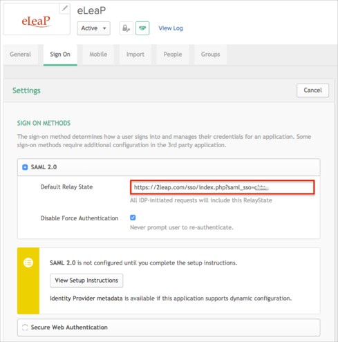
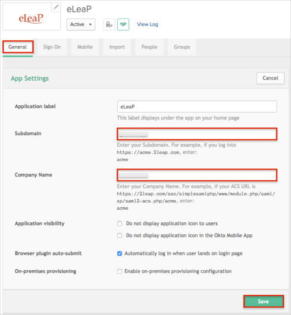

Send an email to to the eLeaP Support team at support@eleapsoftware.com including a request to approve/activate your Okta SSO instance.
Copy the following metadata URL and include it with your email:
Sign into the Okta Admin dashboard to generate this value.
In Okta, select the Sign On tab for the eLeaP app, then click Edit.
Enter the following value into the Default Relay State field: https://2leap.com/sso/index.php?saml_sso=[yoursubdomain]
For example, if you log into https://acme.2leap.com, yoursubdomain is: acme.
If you are unsure of what your Default Relay State value is, contact eLeaP at support@eleapsoftware.com.
Click Save.

Still in Okta, select the General tab for the eLeaP app, then click Edit.
Make sure your Subdomain and Company Name values are entered correctly.
Click Save.

eLeaP will notify you when SAML has been enabled..
Done!
Notes:
IdP-initiated flows are supported.
SP-initiated flows and Just in Time (JIT) provisioning are not supported.